v9s
Live Product Showcase
Real screenshots from a production KubeVirt cluster. Every feature shown is live and working at https://185.165.240.5:5050
Live Screenshots — Production Environment
Login & Dashboard
Secure PAM authentication and real-time cluster overview.
Login Screen
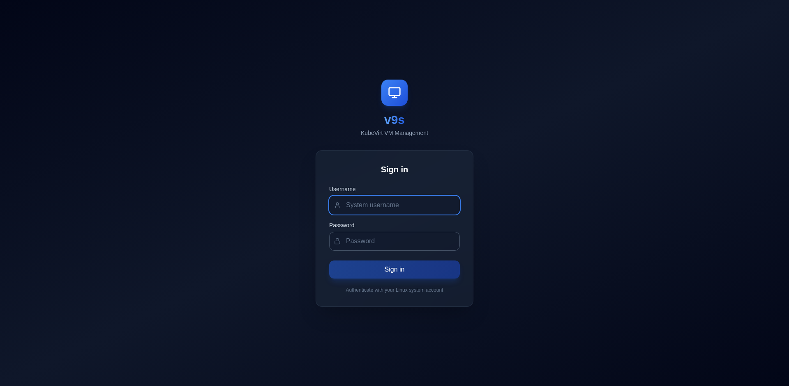
System-level PAM authentication. Supports local users, LDAP, SSSD. JWT token-based sessions.
Dashboard
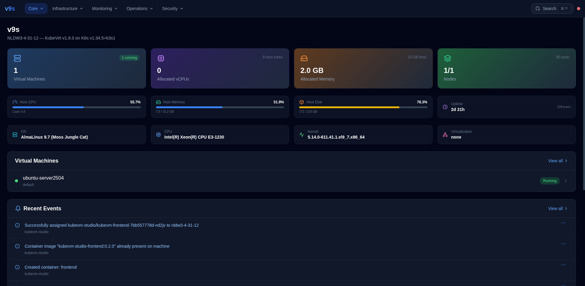
Cluster overview: VM count, allocated vCPUs, memory, nodes. Host CPU/memory/disk gauges with load average. OS, kernel, CPU model. VM list with status. Recent Kubernetes events feed.
VM Management
Full lifecycle control with slide-out detail panel.
VM List with Details Panel
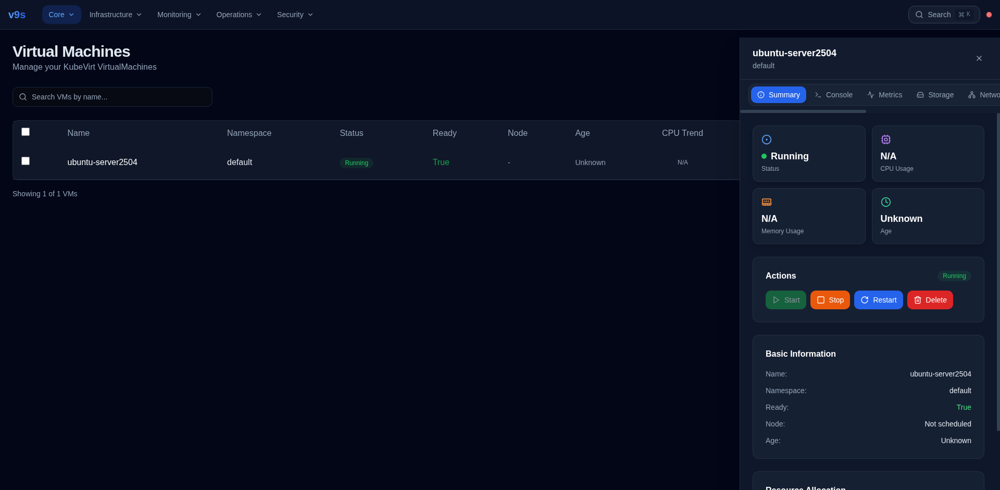
Click any VM to open the detail panel. Summary tab shows: status badge (Running/Stopped), CPU/memory usage, node, age. Action buttons: Start, Stop, Restart, Delete. Basic info and resource allocation.
Console Access
VNC, Serial, and SSH — directly in the browser.
VNC Console with Sendkey Toolbar
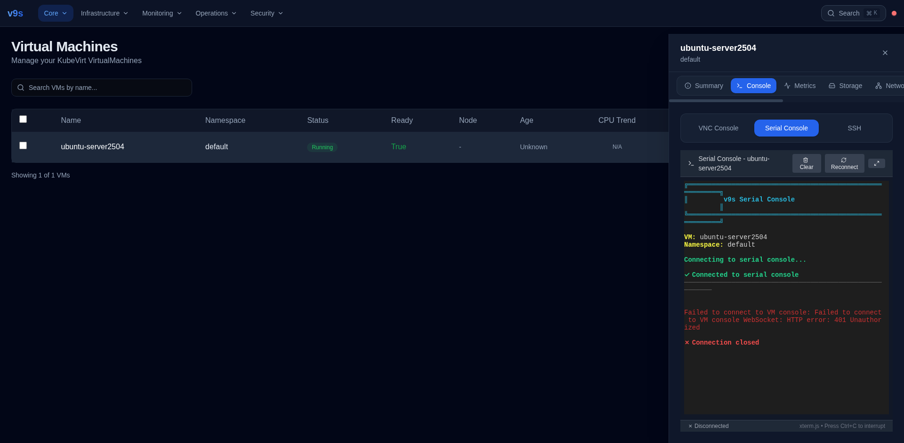
Full graphical VNC console via noVNC WebSocket proxy. Sendkey toolbar with Ctrl+Alt+Delete, Ctrl+Alt+F1/F2/F7. Fullscreen mode. Connection status indicator. Auto-reconnect.
Real-Time Metrics
WebSocket-streamed performance data with live charts.
VM Metrics Dashboard
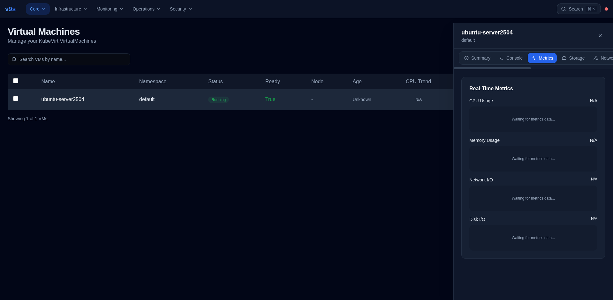
Per-VM metrics via WebSocket: CPU usage (green), Memory usage (blue), Network I/O dual-line (RX purple, TX amber), Disk I/O dual-line (Read cyan, Write red). 60-point rolling history. No Prometheus required.
Storage & Network
Disk management, ISO mount, and network interface control.
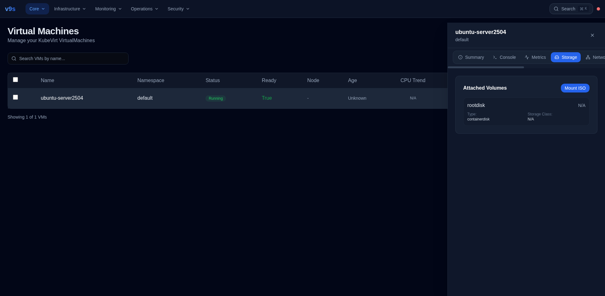
Storage Tab — Attached volumes, ISO mount button
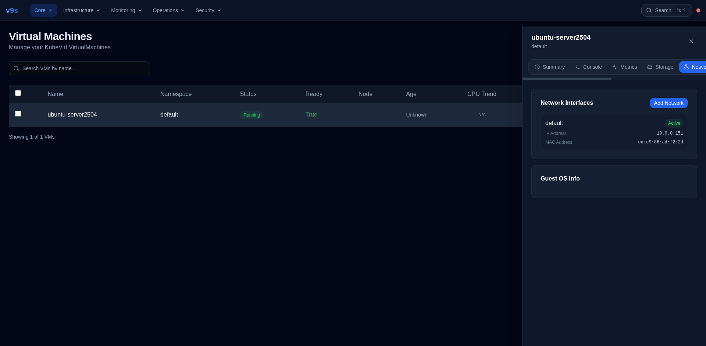
Network Tab — Interfaces, IP, MAC, Add Network
Mount ISO — Modal dialog, container disk URL, SATA CDROM, duplicate protection
Add Network — Pod/Multus types, Bridge/Masquerade/SR-IOV bindings
Storage Classes — View available K8s storage classes for PVC provisioning
Guest OS Info — OS name, version, kernel from QEMU guest agent
Snapshots, Events & YAML
Point-in-time backups, audit trail, and configuration editing.
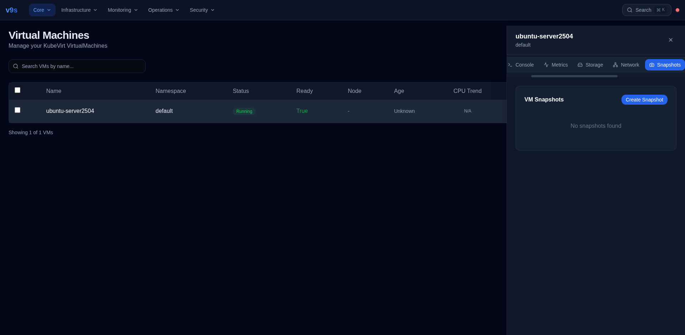
Snapshots — Create, list, delete with status badges
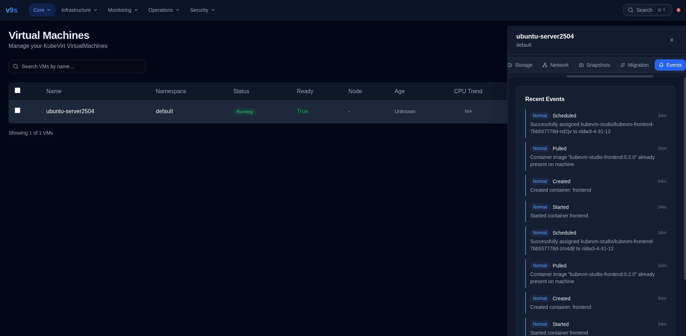
Events — K8s events filtered by VM
YAML Editor
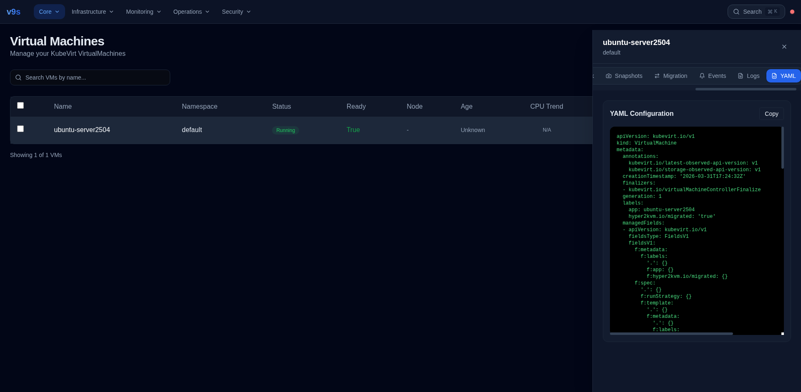
Full VM YAML configuration viewer with copy-to-clipboard. Edit and apply changes directly via KubeVirt API.
Host Information
Complete hardware and system inventory in 5 tabbed sections.
System Overview

Hostname, OS (AlmaLinux 9.7), kernel, CPU model (Intel Xeon E3-1230 v6), BIOS, vendor (Fujitsu). CPU 66%, Memory 52%, Disk 78% with gradient bars. Uptime 2d 21h.
Hardware Inventory

RAM modules: DIMM slot, 16GB DDR4, 2400 MHz, Kingston. PCI devices: 15+ devices with slot, class, vendor, device name. Scrollable table with hover highlight.

Partitions — /boot, /boot/efi, / with usage bars

Services — 55+ systemd services with status badges
Additional Views
Templates, events, and node management.
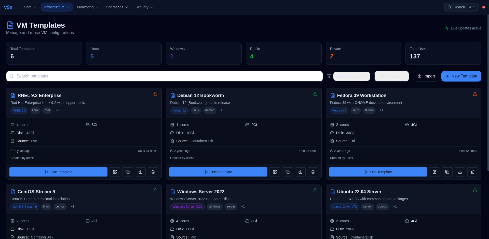
Templates — Browse and deploy VM templates
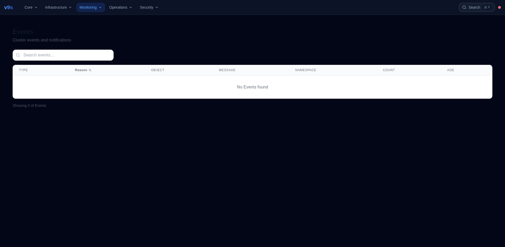
Events — Cluster-wide Kubernetes events
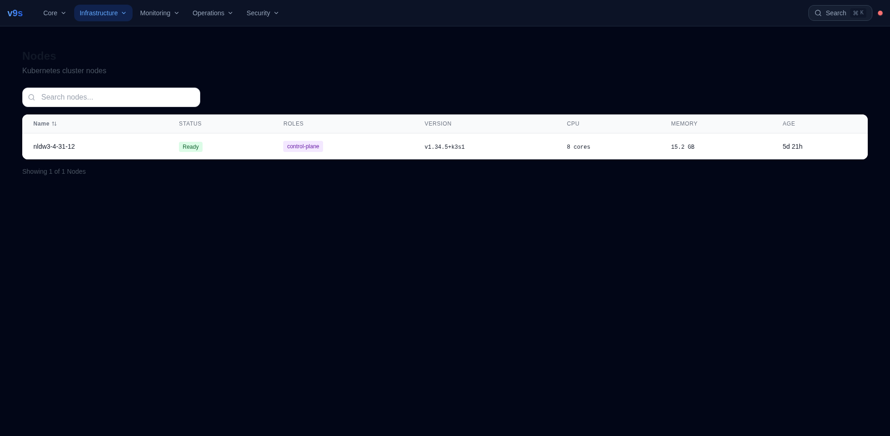
Nodes — Kubernetes node status and resources

Host Network — Interfaces, IPs, traffic counters
See it live
https://185.165.240.5:5050
Production KubeVirt cluster. Real VMs. Real metrics.